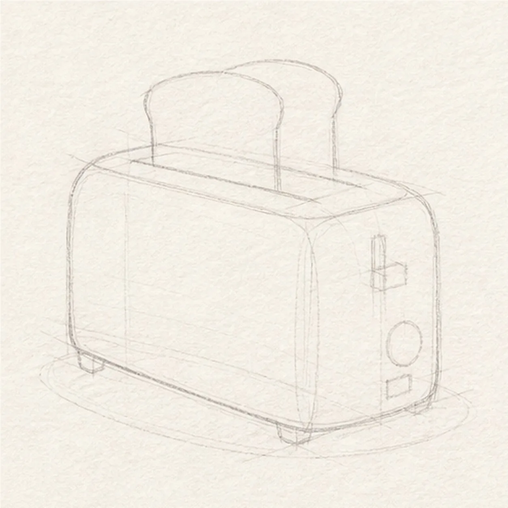
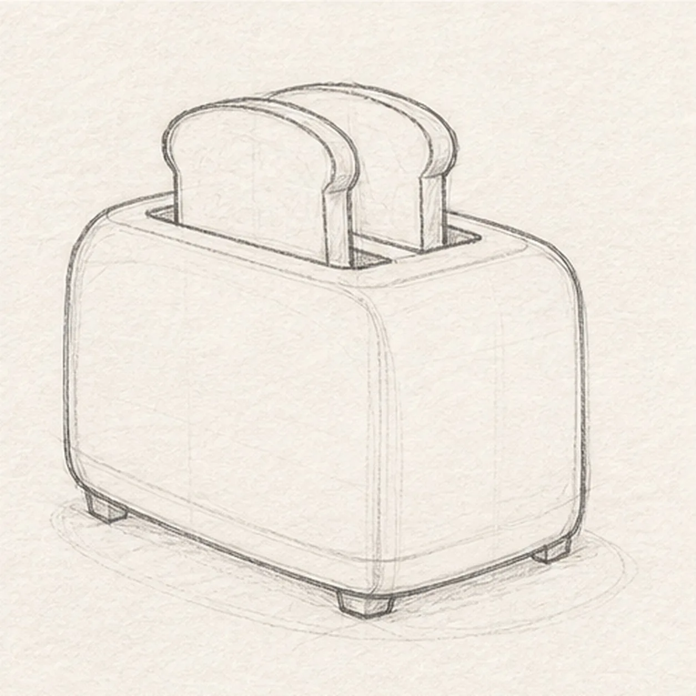
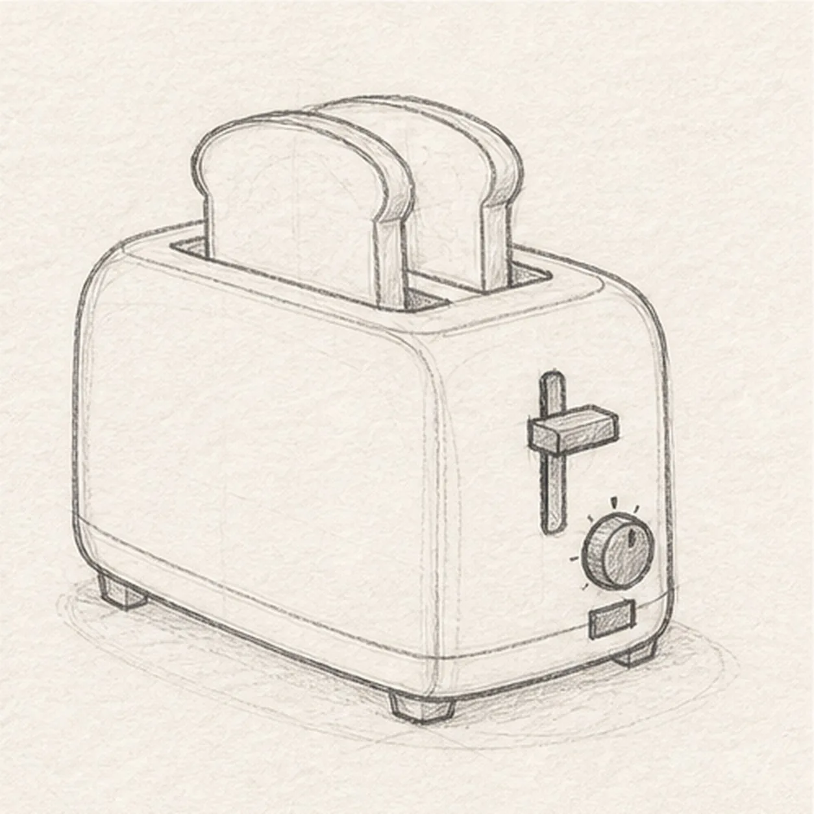
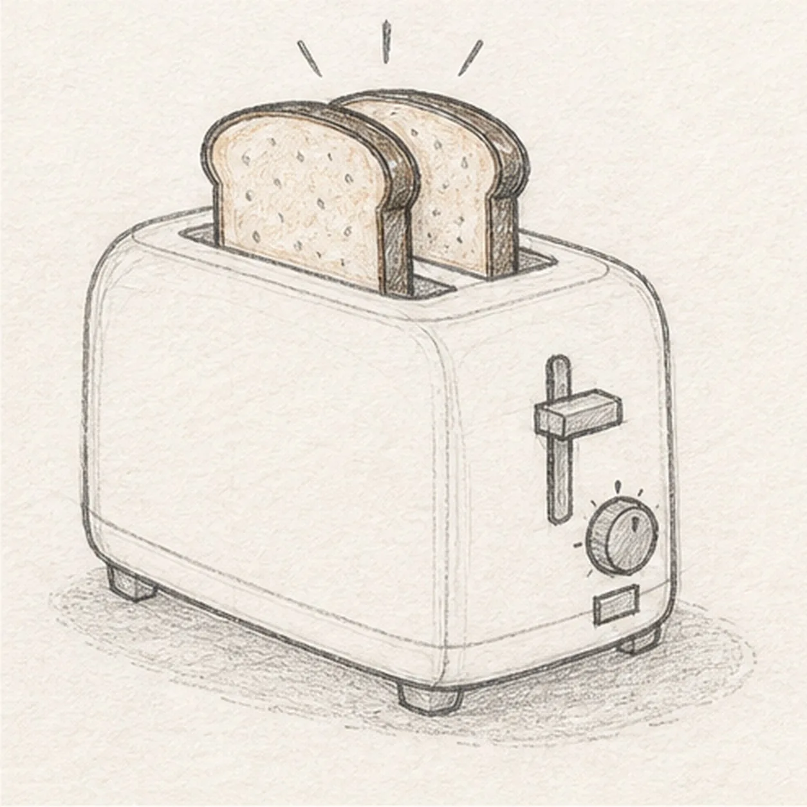
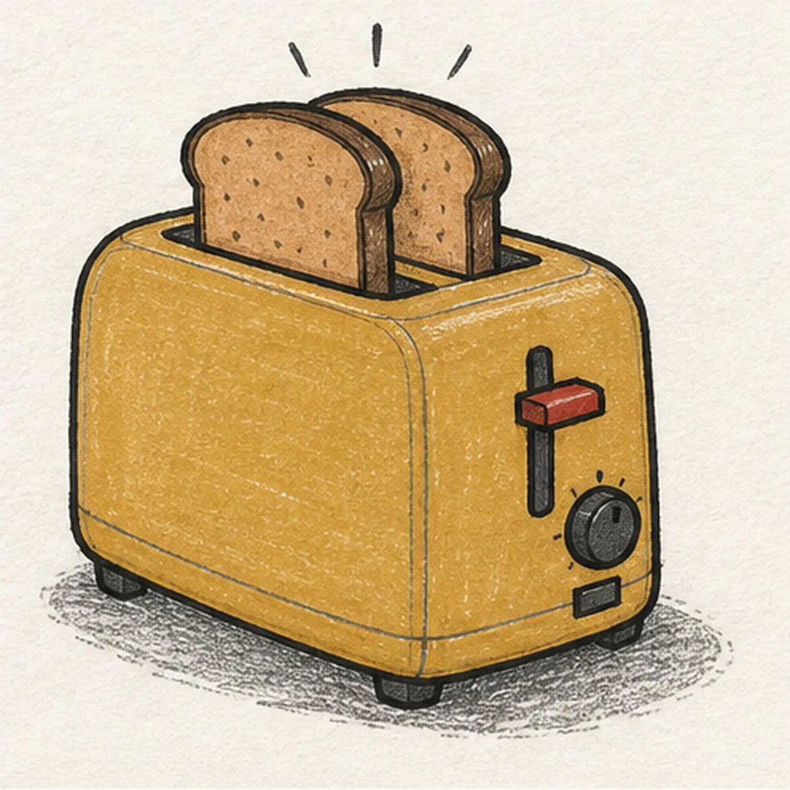

Felt-tip marker mode
Let's draw a toaster popping toast
Treat this as one playful practice round: sketch the idea loosely, simplify the shapes, then commit with confident marker outlines and bright fills.
-
01

Block the toaster and toast
Place one light rounded toaster box in three-quarter view, add the top-plane and slot axes, then reserve exactly two toast footprints, the lever, two controls, three visible feet, and a shallow shadow.
Marker tip: Ghost the top plane before touching down and keep both toast footprints clear of slot detail. Compare the visible front and side widths so the box does not flatten.
-
02

Shape the breakfast silhouette
Wrap the guides with the rounded toaster housing, one top slot, exactly two popping toast slices, and three visible small feet.
Marker tip: Stop the hidden slot edges cleanly at both toast slices. Round the box corners by pulling through them instead of joining four stiff straight lines.
-
03

Add the toaster controls
Draw one side lever, one round browning dial, one small rectangular cancel button, the top-slot lip, and simple housing seams.
Marker tip: Stack the lever, dial, and button with uneven spacing so they feel designed rather than stamped. Keep every control inside the visible side plane.
-
04

Toast the bread and show the pop
Add darker crusts and a few crumb marks to both slices, exactly three short popping rays above them, and one broken oval shadow below.
Marker tip: Let each crust follow its slice edge and vary the tiny crumb marks. Aim the three rays outward without touching the toast.
-
05

Ink the warm breakfast colors
Thicken every established contour, fill the toaster muted mustard, both slices toast brown, the lever handle paprika, the controls charcoal, and the shadow warm gray.
Marker tip: Pull mustard strokes across the toaster planes and leave small paper gaps. Let the fills dry before strengthening the black slot and hardware edges.
-
06

Pop the final lines into focus
Strengthen the keeper outlines and clarify the established toast overlaps, slot lip, lever, two controls, crusts, crumb marks, three rays, warm marker fills, highlights, and shadow.
Marker tip: Count two toast slices, three visible feet, one dial, one button, and three rays, then stop. A face, plate, butter, extra food, sticker edge, or badge frame would make a different lesson.